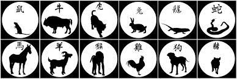
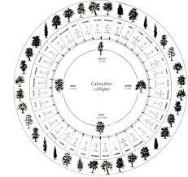
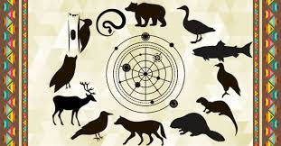
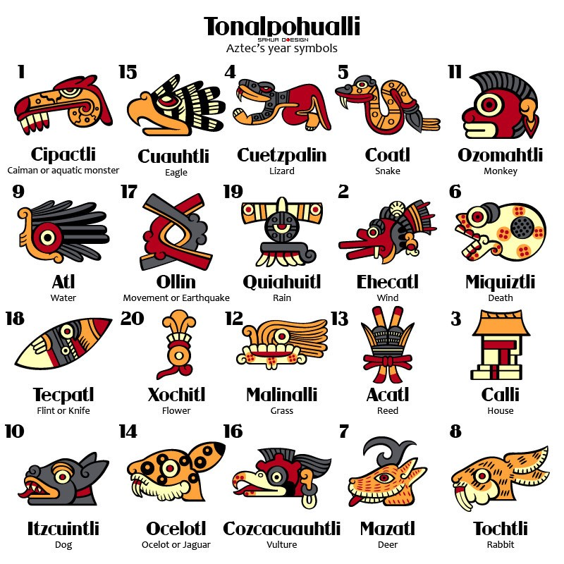

Astrologie chinoise

Les signes astrologiques chinois sont composés d'un animal et d'un élément. Il y a douze animaux
différents et cinq éléments. Un animal et un élément est associé à chaque année. Puisqu'il y a douze
animaux et cinq éléments, cela nous donne un cycle de 60 ans. Une couleur et une planète est associé
à chaque éléments. Ainsi, l'eau est associé au gris et à Mercure, le métal est associé au vert et à
Vénus, le bois est associé au bleu et à Jupiter, le feu est associé au rouge et à Mars alors que la
terre est associé au noir et à Saturne. Chaque animal est associé soit au Yin soit au Yang.
Liens utiles
Si vous voulez savoir quels sont les compatibilités entre les signes rendez-vous au lien suivant : https://www.voyageschine.com/zodiaque-chinois/12-signes-chinois.htm
Si vous souhaitez calculer votre signe chinois rendez-vous au lien suivant : https://www.mon-horoscope-du-jour.com/signes-astrologiques/chinois/quel-est-mon-signe-chinois.htm
Astrologie celtique

La civilisation celtes avait un rapport important avec la nature. Selon eux, chaque arbre avait des
vertus propres à eux. Il y a vingt-et-un signes différents dans l'astrologie celtes, tous liés à des
arbres différents. Les signes sont désignés par rapport à notre date de naissance.
Liens utiles
Si vous voulez voir quels sont les signes et leur signification rendez-vous au lien suivant : https://www.mon-horoscope-du-jour.com/astrologie/monde/astrologie-celtique.htm
Si vous souhaitez calculer votre signe celtique rendez-vous au lien suivant : https://www.mon-horoscope-du-jour.com/astrologie/monde/quel-est-mon-signe-celtique.htm
Astrologie chamanique

L'astrologie chamanique, aussi appelé astrologie amérindienne, a douze signes faisant tous référence
à des animaux. Chaque animal est associé à un vent et à un élément. Chaque vent et chaque éléments
ont trois animaux qui leurs sont associés. De plus, chaque élément correspont à un clan. L'air est
associé au clan du papillon, le feu est associé au clan du faucon, l'eau est associé au clan de la
grenouille et la terre est associé au clan de la tortue. L'air est associé à la force des idées,
l'intelligence, le mouvement et l'échange. Le feu est associé à la spontanéité, la créativité et la
force de caractère. L'eau est associé à l'émotion, l'amour, la confiance, l'accueil et la fertilité.
La terre est associé à l'ordre, la stabilité et le soutien
Liens utiles
Si vous voulez voir quels animaux sont associés à quels éléments et à quels vent rendez-vous au site
suivant
: https://www.mon-horoscope-du-jour.com/astrologie/monde/astrologie-chamanique-amerindienne-totem.htm
Si vous souhaitez calculer votre signe chamanique rendez-vous au lien suivant : https://www.mon-horoscope-du-jour.com/astrologie/monde/quel-est-mon-signe-chamanique.htm
Astrologie aztèque

Si on revient loin dans le temps, on peut retrouver une astrologie aztèque. Puisque cette
civilisation utilisait trois calendriers, chaque personne à trois signes : le signe de jour, le
signe de treizaine et le signe annuel. Le signe de jour représente qui nous somme au quotidien.
C'est le signe qui est le plus important. Le signe de treizaine est vu comme une protection sur la
personne. L'importance de ce signe est moindre, mais il vient équilibrer la personnalité. Enfin, le
signe annuel agit sur les influences qu'à la société sur une personne. On peut le voir comme le
facteur chance d'une personne.
Liens utiles
Si vous voulez voir quels sont les signes et leur signification rendez-vous au lien suivant : https://www.mon-horoscope-du-jour.com/astrologie/monde/astrologie-azteque.htm
Si vous souhaitez calculer votre signe chinois rendez-vous au lien suivant : https://www.mon-horoscope-du-jour.com/astrologie/monde/quel-est-mon-signe-azteque.htm